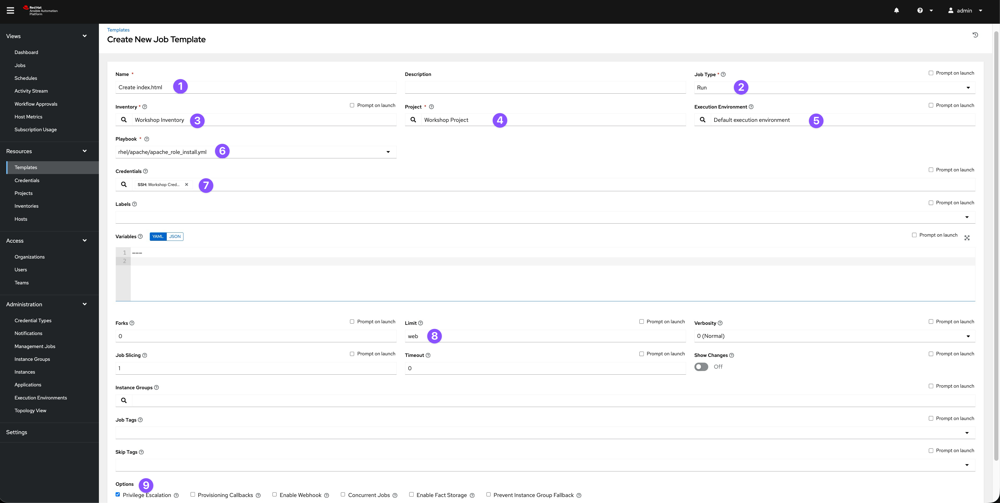
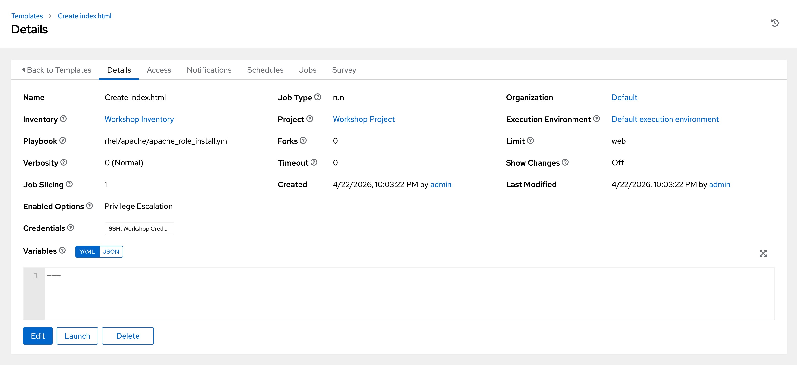
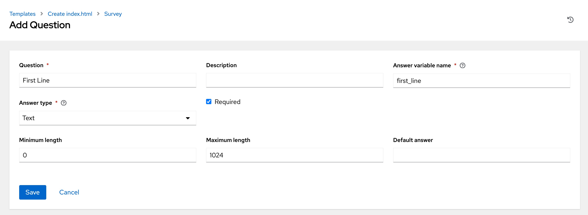
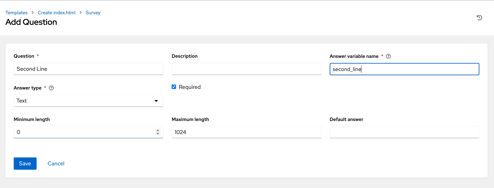
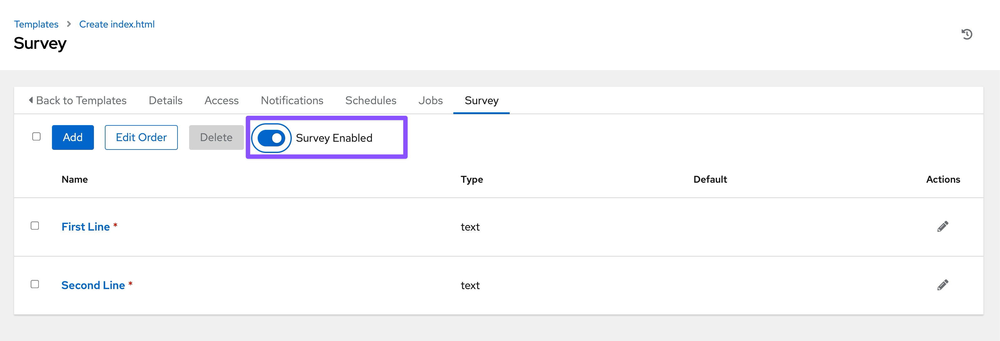
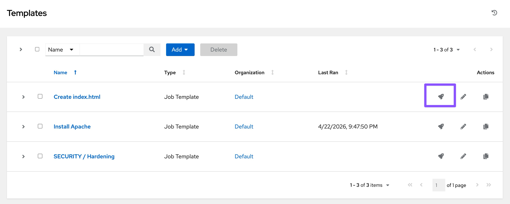
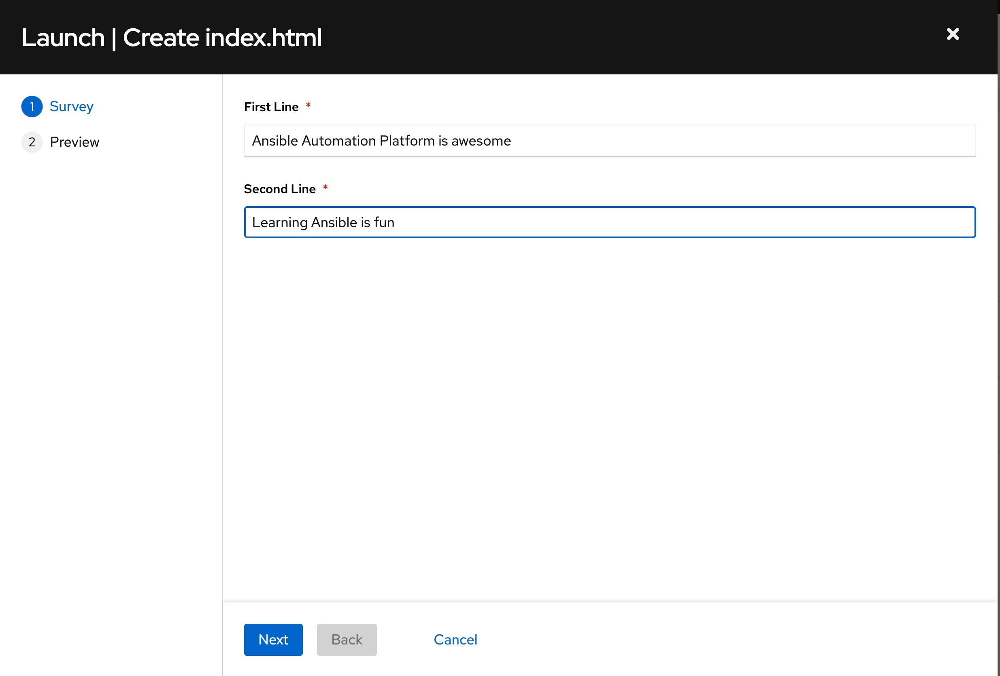
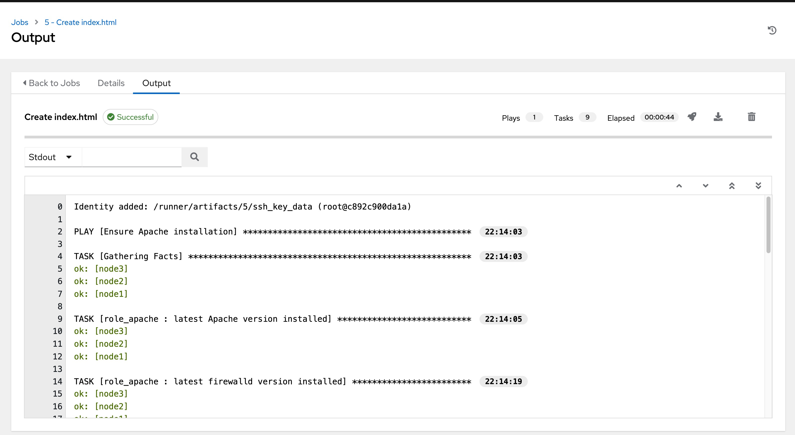
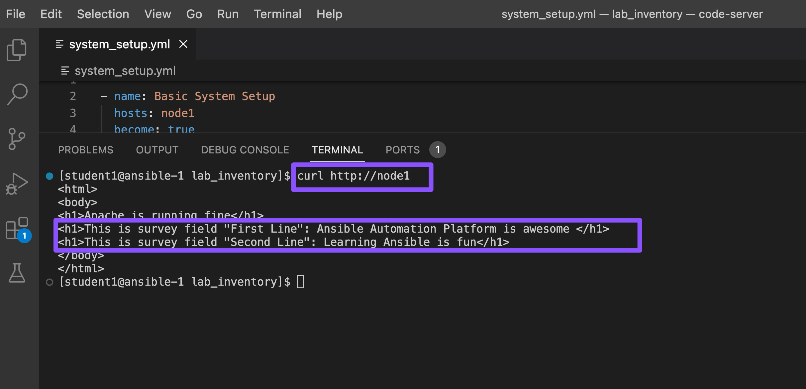

Exercise 3 - Surveys
Table of Contents
Objective
Job Template Survey
A Job Template Survey allows you to ask the user questions before running an automation job.
Instead of editing the playbook or typing values manually, the survey provides a simple question-and-answer form.
Why use a Survey?
- Makes it easy for users to provide input
- Avoids typing mistakes
- Ensures the correct format of input (for example: numbers, text, yes/no)
- No need to change the playbook
How it works
When you launch a job template with a survey:
1. You will see a set of questions
2. You enter your answers
3. The job runs using your inputs
Example
You might use questions like:
- What is the package name to install?
- Which environment do you want to target (dev/test/prod)?
- Enter the username
Your answers are then used by the automation job.
What You Will Do
In this exercise, you will:
- Create a Survey for a Job Template
- Add a few simple questions
- Run the job and provide answers through the survey
This helps you understand how to make automation more interactive and user-friendly.
Refer the survey documentation for more details.
Guide
You've installed Apache on all hosts in the job you just ran. Now, let's build on this:
- Use a proper role that includes a Jinja2 template to deploy an
index.htmlfile. - Create a job Template with a survey to collect values for the
index.htmltemplate. - Launch the job Template.
Additionally, the role will ensure that the Apache configuration is set up correctly for this exercise.
Tip The survey feature provides a simple query for data but does not support dynamic data queries, nested menus, or four-eye principles.
The Apache-Configuration Role
The playbook and role with the Jinja2 template are located in the GitHub repository https://github.com/ansible/workshop-examples in the rhel/apache directory.
- Have a look at the playbook
apache_role_install.yml, which references the role. - The role is located in the
roles/role_apachesubdirectory. - Inside the role, note the two variables in the
templates/index.html.j2template file marked by{{…}}. - The
tasks/main.ymlfile deploys the template.
The playbook creates a file (dest) on the managed hosts from the template (src).
Because the playbook and role are located in the same GitHub repo as the apache_install.yml playbook, you don't need to configure a new project for this exercise.
Create a Template with a Survey
Now, let's create a new Template that includes a survey.
Create Template
-
Go to Resources → Templates, click the Add button, and choose Add job Template.
-
If you do not see the
Resourcesmenu on the side, your environment is likely running Ansible Automation Platform version 2.5 or later. In that case, go to the Automation Execution -> Templates view,click the Create template button and choose Create job template. -
Fill out the following details:
| Parameter | Value |
|---|---|
| Name | Create index.html |
| Job Type | Run |
| Inventory | Workshop Inventory |
| Project | Workshop Project |
| Playbook | rhel/apache/apache_role_install.yml |
| Execution Environment | Default execution environment |
| Credentials | Workshop Credential |
| Limit | web |
| Options | Privilege Escalation |

3. Click Save or Create job template.
Warning Do not run the template yet!
Add the Survey
- In the Template, click the Survey tab, then click Add or Create survey question.
- Fill out the following for the first survey question:
| Parameter | Value |
|---|---|
| Question | First Line |
| Answer Variable Name | first_line |
| Answer Type | Text |

- Click Save or Create survey question.
- Click Add or Create survey question to create a second survey question:
| Parameter | Value |
|---|---|
| Question | Second Line |
| Answer Variable Name | second_line |
| Answer Type | Text |

- Click Create survey question.
- Enable the survey by toggling the Survey disabled button to the
ONpositon.
Warning: Make sure to enable the Survey. Otherwise, it will not show up when launching the Job Template.

Launch the Template
Now, launch the Create index.html job template by clicking the Launch template button.
Before the job starts, the survey will prompt for First Line and Second Line. Enter your text and click Next. The Preview window shows the values—if all looks good, click Launch or Finish to start the job.
Template Launch:

Survey Fill:

Survey Review and Launch:

Once the job completes, verify the Apache homepage by running the following curl http://node1 command in the SSH console on the control host (In VS Code Terminal window).

Alternatively, You can run adhoc command on node1:
- Go to
Resources → Inventories → Workshop Inventory -
If you do not see the
Resourcesmenu on the side, your environment is likely running Ansible Automation Platform version 2.5 or later. In that case, go to Automation Execution → Infrastructure → Inventories → Workshop Inventory -
Select the Hosts tab and select
node1and click Run Command -
Within the Details window, select Module command, in Arguments type
curl http://node1and click Next. -
Within the Execution Environment window, select Default execution environment and click Next.
-
Within the Credential window, select Workshop Credentials and click Next.
-
Review your inputs and click Finish.
Verify that the output result is as expected.